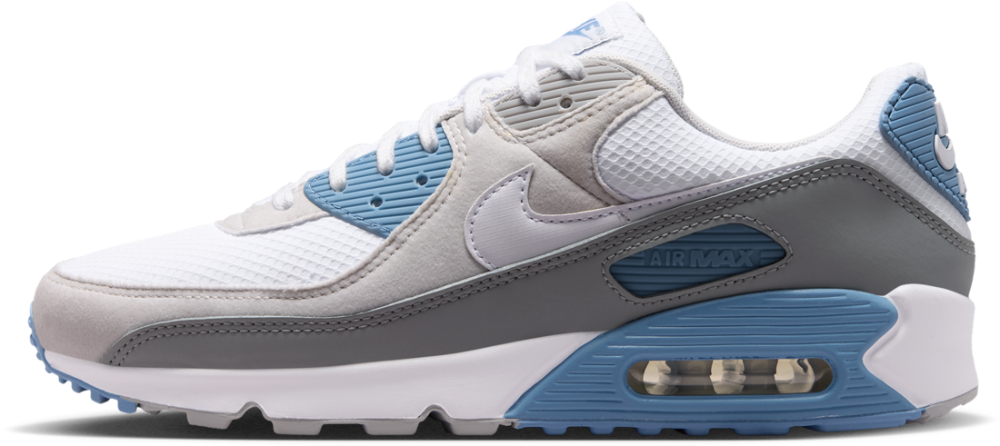

LAB.
Двигай курсором без нажатия.
Почувствуй течение.
Материал в движении.
Двигай курсором. Открывай хром, пузырьки и розовую пену.
Выбери поверхность01 / 03
01 — LIQUID CHROME
Nike Liquid LabИсследуй силуэт ↓Независимый дизайн-концепт
ГОТОВИМ ЭКСПЕРИМЕНТ...
Air Max 90. Знакомая форма.
Узнаваемые линии. Многослойная фактура. Видимая Air-амортизация. Здесь классический силуэт становится пространством для эксперимента.
Оригинальная модель на Nike.com ↗
Air Max 90 · вид сбоку
Одна форма. Три ощущения.
Зеркальный металл, прозрачные пузырьки или мягкая розовая пена. Это цифровые интерпретации — новые поверхности знакомой формы.